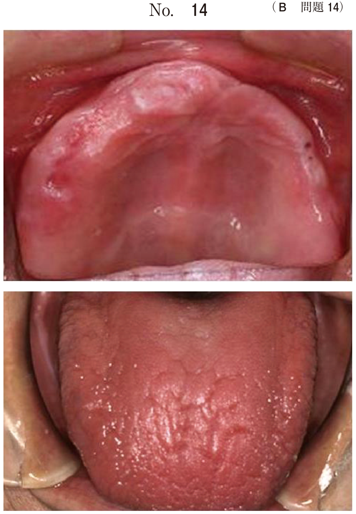

変色歯は原因によって大きく2つに分類される。
歯の表面に付着した物質による変色。研磨・清掃で除去可能。
歯質内部の変色。研磨では除去できない。
| 分類 | 原因 | 特徴 |
|---|---|---|
| 外因性 | テトラサイクリン系抗菌薬 | 多数歯に対称性、黄褐色〜灰褐色の横縞 |
| フッ化物過剰摂取 | 多数歯に対称性、白斑〜褐色斑（斑状歯） | |
| 重金属 | 鉛、水銀など | |
| 齲蝕 | 初期は白斑、進行で褐色〜黒色 | |
| 内因性 | 加齢 | 象牙質の変色が透過して見える |
| 歯髄壊死・歯内療法後 | 灰色〜黒色、単独歯 | |
| ポルフィリン症 | 赤褐色 | |
| 過ビリルビン血症・新生児黄疸 | 黄色〜緑色 | |
| 新生児メレナ | 青色〜緑色 |
歯の発育期（形成期）に生じるエナメル質の異常。変色の原因となる。
| 種類 | 原因 | 臨床所見 |
|---|---|---|
| エナメル質減形成 | 基質形成量の減少 | 形態異常（凹凸、実質欠損） |
| エナメル質石灰化不全 | 基質形成は正常、石灰化度が低い | 限局性の白濁や白斑 |
| 原因 | 発現パターン | 具体例 |
|---|---|---|
| 局所的原因 | 非対称性（特定歯に限局） | 外傷、乳歯根尖病巣（ターナー歯） |
| 全身的原因 | 対称性（多数歯） | 栄養障害、感染症、フッ化物、内分泌障害、遺伝 |
| 原因 | 分布 | 色調 | その他の特徴 |
|---|---|---|---|
| エナメル質石灰化不全 | 限局性 | 白濁・白斑 | 局所的原因では非対称 |
| テトラサイクリン歯 | 多数歯・対称性 | 黄褐色〜灰褐色 | 横縞状、紫外線で蛍光 |
| 歯のフッ素症（斑状歯） | 多数歯・対称性 | 白斑〜褐色斑 | 飲料水中フッ素濃度1ppm以上 |
| 初期齲蝕 | 限局性 | 白斑（ホワイトスポット） | 歯垢付着部位に一致 |
24歳の女性。上顎両側側切歯の変色を主訴として来院した。小学生のころから変色に気付いていたが放置していたという。初診時の口腔内写真（別冊No.20）を別に示す。
矢印で示す変色の原因はどれか。1つ選べ。

【解説】上顎両側側切歯に限局した白濁が認められる。小学生のころから気付いていたことから、歯の形成期に生じた異常と考えられる。テトラサイクリン歯やフッ素症は多数歯に対称性に発現するため否定される。口腔清掃不良や初期齲蝕は外来性・後天性であり、幼少期からの変色とは合わない。エナメル質石灰化不全は基質形成は正常だが石灰化度が低く、限局性の白濁を呈する。